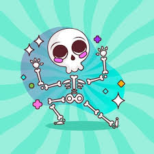

O Sagui, um amante das danças, descobriu que um monstro da dança roubou a dança da humanidade e fugiu para outra dimensão. Determinado a recuperar a dança, ele aprende a abrir portais para outras dimensões com o mago Lúcifer dos Santos. Agora, ele deve escolher por qual portal começar sua busca.
Você escolheu o Portal da Floresta Encantada. Ao atravessar, o Sagui encontra uma floresta vibrante cheia de criaturas mágicas e desafios naturais. Para seguir em frente, ele deve encontrar o amuleto escondido na floresta.
Você escolheu o Portal das Montanhas Geladas. Ao atravessar, o Sagui encontra-se em um ambiente gelado e traiçoeiro, cheio de obstáculos e criaturas congeladas. Para seguir, ele precisa encontrar o caminho seguro através das montanhas.
Você escolheu o Portal da Cidade Subterrânea. Ao atravessar, o Sagui entra em uma cidade oculta sob a terra, repleta de enigmas e construções antigas. Para avançar, ele deve resolver o enigma da entrada secreta.
O Sagui encontra o amuleto escondido na floresta. Com ele, ele ganha novos poderes que o ajudam a superar desafios e a avançar para o próximo portal.
Explorar a floresta revela novos caminhos e segredos, mas o Sagui precisa de mais tempo para encontrar o amuleto escondido. Ele deve continuar sua busca para avançar.
Encontrar o caminho seguro através das montanhas leva o Sagui a um atalho para o próximo portal, permitindo-lhe evitar perigos e avançar mais rapidamente.
Desafiar uma criatura nas montanhas revela segredos escondidos e oferece uma rota alternativa. O Sagui deve escolher sabiamente para evitar perigos adicionais.
Resolver o enigma da entrada secreta permite ao Sagui acessar áreas profundas da cidade subterrânea e obter informações vitais sobre a localização do monstro da dança.
Explorar a cidade subterrânea revela pistas e tesouros escondidos, mas o Sagui precisa resolver o enigma da entrada secreta para seguir em frente.
Avançar para o Portal Final após obter informações de qualquer uma das dimensões leva o Sagui diretamente ao confronto com o monstro da dança. Ele está pronto para recuperar a dança da humanidade.
Com coragem e habilidades aprimoradas, o Sagui enfrenta o monstro da dança e recupera a dança da humanidade. A cidade celebra a vitória e o Sagui é aclamado como um verdadeiro herói.
O Sagui, ao avançar para o Portal das Montanhas Geladas com o amuleto, encontra novas formas de superar os desafios e alcançar o próximo portal. Sua jornada continua.
Ao avançar para o Portal Final, o Sagui chega ao confronto final com o monstro da dança. Ele utiliza todas as habilidades e conhecimentos adquiridos para derrotar o monstro e restaurar a dança da humanidade.
Com sucesso, o Sagui recupera a dança e retorna à sua dimensão, onde é celebrado por sua bravura e habilidades. Parabéns, você completou a jornada!